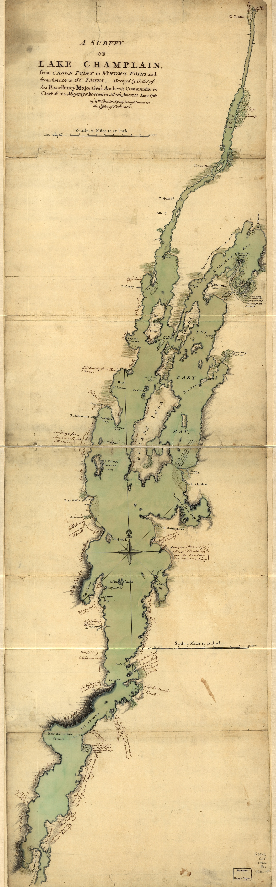
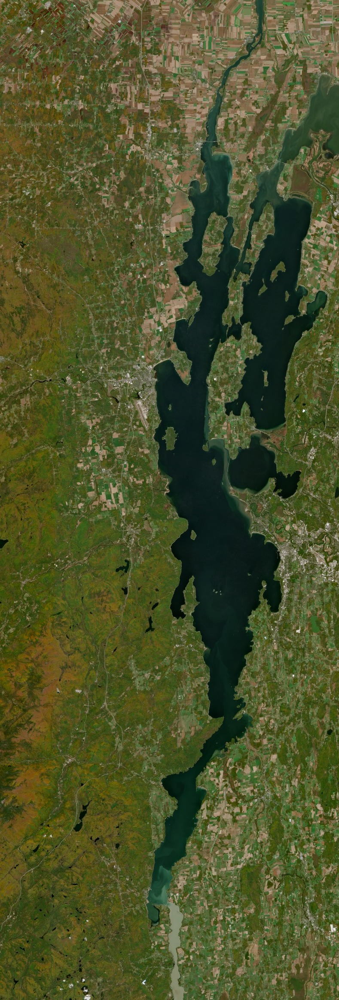

Lake Champlain
A British military survey, 1762 — and the same lake from orbit, 2025


The Lake They Couldn't Map Right — Until a War Made Them
In 1762, a British Army draughtsman named William Brasier finished a map that no one had managed to get right in over a century of trying.
Lake Champlain — the long, narrow lake that runs along today's New York–Vermont border and reaches north into Quebec — had been drawn on European maps since the 1600s. Almost all of them got its shape and position wrong. Some 18th-century maps placed the lake far to the east of where it actually sits. For a body of water this important, that's a strange thing to have gotten wrong for so long.
Here's why it mattered: this lake, together with Lake George and the Richelieu River, formed the only real water highway connecting the Hudson River to the St. Lawrence — connecting the British colonies to New France. Armies, traders, and raiding parties had been moving up and down this corridor for a hundred years before anyone drew it accurately. It was dangerous enough, and fought over often enough, that people at the time just called it "the Great Warpath."
Brasier had actually started surveying the lake back in 1758, working under a military engineer named Dietrich Brehm, mapping the area around a fort the French called Carillon — the same fort the British would soon rename Ticonderoga. But the survey kept getting interrupted, because the region was an active battlefield in the French and Indian War. You can't finish a careful survey of a lake while armies are still fighting over its shoreline.
By 1762, the war in North America was effectively over. Major-General Jeffery Amherst, the British commander-in-chief, ordered Brasier to finally finish the job. The result was the first genuinely accurate map of Lake Champlain ever produced — every island, inlet, and shoreline feature drawn from real fieldwork instead of guesswork. It even marks lead mines and quarries along the shore, the kind of detail that only matters if you're thinking about the region in military terms.
The map didn't stay a historical curiosity for long. Fifteen years later, in 1777, British officers carried later printed versions of this exact survey with them during the campaign that led to their defeat at Saratoga — a battle historians often point to as the turning point of the American Revolution. A map drawn to help end one war ended up in the hands of the army fighting the next one.
What you're looking at above is that 1762 survey, next to a real satellite pass of the same lake taken in October 2025 — the same shoreline, the same islands, two hundred and sixty-three years apart.
Historical map: "A Survey of Lake Champlain, from Crown Point to Windmill Point, and from thence to St. Johns," surveyed by order of Major-General Jeffery Amherst, drafted by William Brasier, 1762. Source: Library of Congress, Geography and Map Division — public domain.
Want the full-resolution files?
Both images above, full resolution, no watermark — join the list and they're yours immediately.
Thanks — your downloads are ready.
Download the 1762 survey map (full resolution)
{kind=link}
Download the 2025 satellite image (full resolution)
{kind=link}
Tip: you can also right-click either image above (press and hold on mobile) and choose “Save Image As…” to save it directly.
Real places, real orbital passes
Fields From Orbit turns real Sentinel-2 satellite imagery into documented, dated fine art — every piece shows exactly where and when it was captured. Join the list and get a free digital download as a welcome gift, then a new place roughly every two weeks.